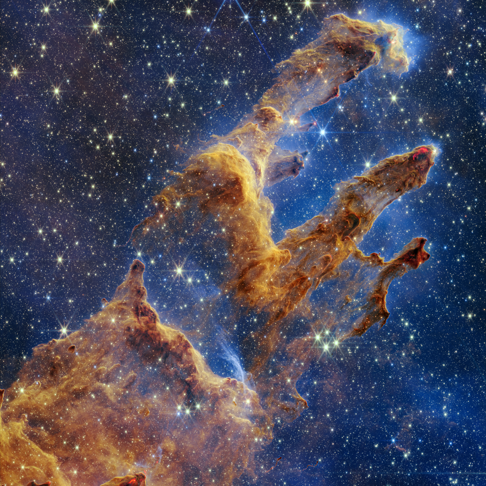

Home
[1] X. Zhu, Y. Gao, R. Mhana, T. Yang, B. L. Hanson, X. Yang, J. Gong, and N. Wu, “Synthesis and Propulsion of Magnetic Dimers under Orthogonally Applied Electric and Magnetic Fields,” Langmuir, Vol. 37, No. 30, 2021, pp. 9151–9161.
[2] M. A. Haque, X. Zhu, B. L. Hanson, and N. Wu, “Assembly of Magnetic Microspheres Under Combined Electric and Magnetic Fields,” 2021 AIChE Annual Meeting, AIChE, 2021.
[3] B. L. Hanson, A. J. Rosengren, and T. R. Bewley, “State Estimation of Chaotic Trajectories: A Higher-Dimensional, Grid-Based, Bayesian Approach to Uncertainty Propagation,” AIAA SCITECH 2024 Forum, AIAA, 2024.
1. 240th AAS Meeting, Pasadena, CA, June 2022, “Fitting Galactic Spectral Energy Distributions”, Chambliss Astronomy Achievement Student Award Honorable Mention
2. 2024 AIAA/AAS Space Flight Mechanics Meeting, Orlando, FL, January 2024, “State Estimation of Chaotic Trajectories: A Higher-Dimensional, Grid-Based, Bayesian Approach to Uncertainty Propagation”